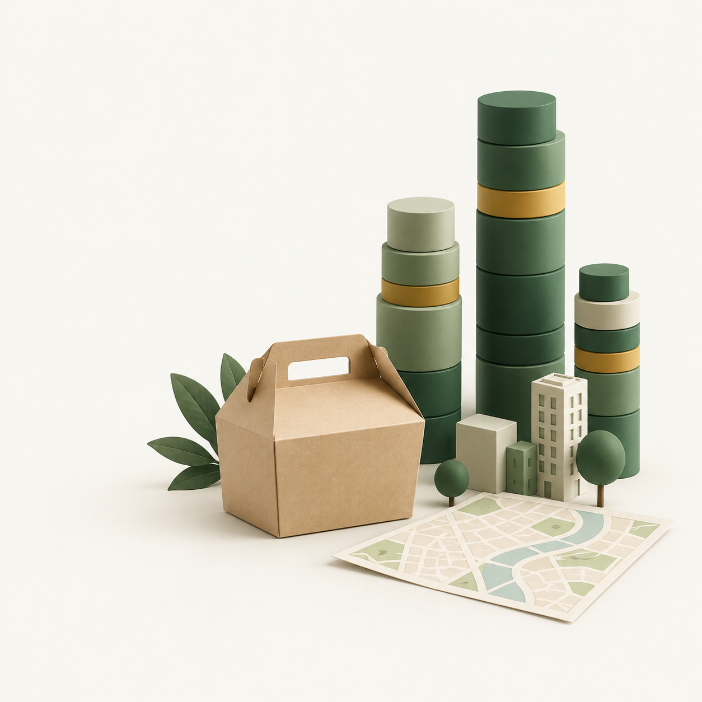

Delivery Atlas
ClickHouse event analytics
for a food delivery app
Fictional platform inspired by Uber Eats and Glovo

WORKING TODAY
ClickHouse data lab
NEXT DEVELOPMENT STEP
Delivery mini app
BD2 · Five-minute progress update · 5 October 2026
01
What is ClickHouse?
A database for analysing
large amounts of data
Stores information by columns
Uses SQL for counts and filters
Fits dashboards with millions of events
Example event table
| Time | Action | City |
|---|---|---|
| 13:01 | Search | Madrid |
| 13:02 | Open item | Madrid |
| 13:03 | Add to cart | Seville |
Fictional example. Our lab runs in Docker on one node.
02
Our data sources
PUBLIC DATA ALREADY LOADED
| Source | What it contains | Loaded volume |
|---|---|---|
| OTTO | E-commerce events | 216.7M events |
| REES46 | E-commerce events | 411.7M events |
| Ele.me | Food recommendations | 2.17M samples |
| Glovo | Product catalogue | 415K products in Spain |
PROPOSED SIMULATED DATA
Our app: searches, restaurant views and cart actions
Separate datasets. Simulated actions will carry a clear label.
03
Proposed data flow and schema
PROPOSED APP INTEGRATION
App action
Python checks
ClickHouse
Dashboard
Dashboard queries go through Python
ONE ACTION = ONE ROW
| Event ID | Session | Time | Action | City | Origin |
|---|---|---|---|---|---|
| event_id | session_id | event_time | event_type | city_id | source_kind |
Group by month. Create daily summaries.
SQL design exists. App integration is the next development step.
04
A faster dashboard
217 million
OTTO events in the test
Query time (seconds)
Daily summary
0.21
All events
5.89
0 6.5 seconds
~28×
faster
Same answer
One query on our computer. Both queries use ClickHouse.
05
Current progress and next steps
WORKING TODAY
NEXT STEPS
ClickHouse running
Public datasets loaded
Dashboard available
Connect the delivery mini app
Generate simulated actions
Test repeated requests and load
A user action should appear in the dashboard and count once.
Current setup: one node. Failure recovery still needs testing.
06